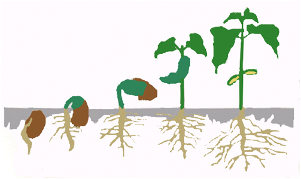

ออกซิน ( Auxin )
เป็นฮอร์โมนที่พืชสร้างขึ้นจากปลายยอดหรือปลายราก เพื่อกระตุ้นให้เซลล์ขยายขนาดที่ปลายยอดออกซินแพร่จากด้านที่มีแสงมากไปยังด้านที่มีแสงน้อย ดังนั้นด้านที่มีแสงน้อยจะมีออกซินมากกว่า เซลล์จึงขยายตัวได้มากกว่า ปลายยอดจึงโค้งเข้าหาแสง
– การสังเคราะห์ออกซิน
ในปี ค.ศ. 1934 ได้พบว่า ออกซินมีลักษณะทางเคมีเป็นสาร Indole-3-acetic acid หรือ เรียกย่อๆ ว่า IAA ซึ่งในปัจจุบันเชื่อว่าเป็นออกซินส่วนใหญ่ที่พบในพืชและในสภาพธรรมชาติ อยู่ในรูป Indole ทั้งสิ้น โดยที่ IAA เป็นสารที่สำคัญที่สุด นอกจากนั้นยังพบในรูปของ Indole-3-acetaldehyde หรือ IAAld Indole-3-Pyruvic acid หรือ IPyA และ Indole-3-acetonitrile หรือ IAN ซึ่งสารทั้ง 3 ชนิดนี้สามารถเปลี่ยนเป็น IAA ได้ พืชสังเคราะห์ออกซินที่ใบอ่อน จุดกำเนิดของใบและเมล็ดซึ่งกำลังเจริญเติบโต
การสังเคราะห์ออกซินนั้น มีกรดอะมิโน L-Tryptophan เป็นสารเริ่มต้น (Precursor) L-Tryptophan เป็นกรดอะมิโนที่มีโครงสร้างของ Indole อยู่ การสังเคราะห์ออกซิน ซึ่งในการสังเคราะห์ IAA นั้น จะมี IAAld และ IPyA เป็นสารที่พบในระหว่างการสังเคราะห์ ในพืชบางชนิด เช่น ข้าวโอ๊ต ยาสูบ มะเขือเทศ ทานตะวัน และข้าวบาร์เลย์ พบว่า Tryptophan สามารถเปลี่ยนเป็น Tryptamine ได้ ในพืชตระกูลกะหล่ำ Tryptamine อาจจะเปลี่ยนไปเป็น Indoleacetaldoxime แล้วเปลี่ยนไปเป็น IAN แล้วจึงเปลี่ยนเป็น IAA
การศึกษาเรื่องการสังเคราะห์ออกซินมักศึกษาจากเนื้อเยื่อปลายรากหรือปลายยอด และพบว่า IAA นี้สังเคราะห์ได้ทั้งในส่วนไซโตซอล (Cytosol) ไมโตคอนเดรีย และคลอโรพลาสต์ ในการศึกษาในปัจจุบันพบว่า Phenylacetic acid หรือ PAA มีคุณสมบัติของออกซินด้วย และสามารถสังเคราะห์ได้จาก L-Phenylalanine โดยพบในคลอโรพลาสต์ และไมโตคอนเดรียของทานตะวัน
สารสังเคราะห์ที่มีคุณสมบัติของออกซินมีหลายชนิดที่สำคัญทางการเกษตร เช่น สาร 2,4-dichlorophenoxyacetic acid หรือ 2,4-D ซึ่งใช้ในการกำจัดวัชพืช IBA หรือ Indole butyric acid ใช้ในการเร่งให้ส่วนที่จะนำไปปักชำเกิดรากเร็วขึ้น และ NAA หรือ Napthalene acetic acid จะช่วยในการติดผลของผลไม้บางชนิด เช่น แอปเปิล
– ความสัมพันธ์ระหว่างโครงสร้างของโมเลกุลและการมีคุณสมบัติของออกซิน
เนื่องจากมีสารที่เกิดในธรรมชาติและสารสังเคราะห์จำนวนมากมีคุณสมบัติของออกซิน จึงจำเป็นต้องรู้โครงสร้างของโมเลกุลที่จะก่อให้เกิดคุณสมบัติของออกซินได้ ซึ่งมีการศึกษากันมาก ในขั้นต้น เข้าใจว่าสารที่จะมีคุณสมบัติของออกซินต้องประกอบด้วยวงแหวนที่ไม่อิ่มตัว มี side chain เป็นกรด ซึ่งต่อมาพบว่าไม่ใช่สาเหตุที่แท้จริง เพราะมีสารหลายชนิดที่ไม่มีลักษณะ ดังกล่าว แต่มีคุณสมบัติของออกซิน จากการศึกษาของ Thimann ในปี ค.ศ. 1963 ได้สรุปว่า โครงสร้างของโมเลกุลที่สำคัญของสารที่จะมีคุณสมบัติของออกซินคือ ต้องประกอบด้วยประจุลบ (Strong Negative Charge) ซึ่งเกิดจากการแตกตัวของกลุ่มคาร์บอกซิล และประจุลบจะต้องอยู่ห่างจากประจุบวก (Weaker Positive Charge) บนวงแหวนด้วยระยะทางประมาณ 5.5 Angstrom สมมุติฐานของ Thimann นับว่าใช้อธิบายโครงสร้างโมเลกุลของสารที่มีคุณสมบัติของออกซินได้ครบ
– การวัดปริมาณออกซิน
1. Bioassay คือ การวัดปริมาณออกซินโดยใช้ชิ้นส่วนของพืช เช่น โคลีออพไทล์ของข้าวโอ๊ตหรือพืชใบเลี้ยงเดี่ยวอื่นๆ แล้ววัดความโค้งของยอดโดยการวางออกซินที่ต้องการวัดปริมาณลงบนส่วนของโคลีออพไทล์ซึ่งตัดยอดออกแล้ว มุมที่โค้งจะบอกปริมาณของออกซินได้โดยเปรียบเทียบจากเส้นมาตรฐาน (Standard Curve)
2. การวัดจากคุณสมบัติทางฟิสิกส์ คือ การวัดปริมาณของออกซินโดยใช้การดูดกลืนแสงของ IAA ซึ่งเมื่อมีความเข้มข้นต่างกันจะดูดกลืนแสงได้ต่างกัน โดยใช้ความยาวคลื่นแสงที่ 280 nm หรือสกัดจนเป็นสารบริสุทธิ์แล้วจึงใช้เครื่อง Gas Chromatograph ร่วมกับ Mass Spectrometry ในการจำแนกและหาปริมาณ
3. การวัดโดยวิธีเคมี โดยให้ออกซินทำปฏิกิริยากับ Salkowski's Reagent (acidified ferric chloride) หรือใช้ Ehrllch's Reagent ซึ่งจะเกิดสีขึ้นมา จากนั้นวัดความเข้มของสีแล้วเปรียบเทียบกับเส้นมาตรฐาน
– การเคลื่อนที่ของออกซินในต้นพืช
จากส่วนของพืชที่มีการสังเคราะห์ ฮอร์โมนจะเคลื่อนย้ายไปสู่ส่วนอื่นๆ และมีผลกระทบต่อเนื้อเยื่อที่ได้รับฮอร์โมน การเคลื่อนที่จะถูกควบคุมอย่างดี การเคลื่อนที่ของออกซินจะเป็นแบบโพลาไรซ์ (Polarized) คือ เคลื่อนที่ไปตามยาวของลำต้นโดยไปในทิศทางใดทิศทางหนึ่งมากกว่าทิศทางตรงกันข้าม ซึ่งการเคลื่อนที่แบบโพลาร์ (Polar) นี้จะเกี่ยวข้องกับการเจริญและการเปลี่ยนแปลงทางคุณภาพของพืชทั้งต้น
การเคลื่อนที่ของออกซินในส่วนที่อยู่เหนือดิน จะเป็นแบบโพลาร์ เบสิพีตัล (Polar Basipetal) คือ จะเคลื่อนที่จากแหล่งผลิตที่ยอดไปสู่โคนต้น ซึ่งการทดลองที่แสดงว่ามีการเคลื่อนที่แบบนี้สามารถทำได้โดยใช้ก้อนวุ้นที่เป็นแหล่งให้ออกซินและรับออกซิน (Donor-Receiver Agar Block) คือ ใช้ก้อนวุ้นที่มีออกซินอยู่วางบนท่อนของเนื้อเยื่อ ส่วนก้อนวุ้นอีกก้อนซึ่งทำหน้าที่รับออกซินอยู่อีกปลายหนึ่งของท่อนเนื้อเยื่อ ออกซินจะเคลื่อนที่จากก้อนวุ้นที่มีออกซินผ่านเนื้อเยื่อลงไปสู่ก้อนวุ้นที่ไม่มีออกซิน ซึ่งจากวิธีการนี้สามารถคำนวณความเร็วของการเคลื่อนที่ของออกซินในเนื้อเยื่อได้ เพราะทราบความยาวของท่อนเนื้อเยื่อ ความเร็วในการเคลื่อนที่แสดงเป็นระยะทางต่อหน่วยเวลา ซึ่งความเร็วในการเคลื่อนที่ของออกซินจะประมาณ 0.5-1.5 เซนติเมตรต่อชั่วโมง
– การเคลื่อนที่ของออกซินเป็นกระบวนการที่ต้องใช้พลังงานโดยมีหลักฐานที่สนับสนุนดังนี้
1. การเคลื่อนที่เร็วกว่าการซึม 10 เท่า
2.เคลื่อนที่ได้ดีในสภาพที่มีออกซิเจนเท่านั้น และการเคลื่อนที่หยุดได้โดยสารบางชนิด (Inhibitor)
3. เคลื่อนที่จากบริเวณที่มีปริมาณมากไปสู่บริเวณที่มีปริมาณน้อย (Gradient)
4. เกิด Saturation Effect ได้
– การตอบสนองของพืชต่อออกซิน
1. การตอบสนองในระดับเซลล์ ออกซินทำให้เกิดการขยายตัวของเซลล์ (Cell enlargement) เช่น ทำให้เกิดการขยายตัวของใบ ทำให้ผลเจริญเติบโต เช่น กรณีของสตรอเบอรี่ ถ้าหากกำจัดแหล่งของออกซิน ซึ่งคือส่วนของเมล็ดที่อยู่ภายนอกของผล (ผลแห้งแบบ Achene) จะทำให้เนื้อเยื่อของผลบริเวณที่ไม่มีเมล็ดรอบนอกไม่เจริญเติบโต ออกซินทำให้เกิดการแบ่งเซลล์ได้ในบางกรณี เช่น กระตุ้นการแบ่งเซลล์ของแคมเบียมและกระตุ้นให้เกิดการเปลี่ยนแปลงทางคุณภาพ เช่น กระตุ้นให้เกิดท่อน้ำและท่ออาหาร กระตุ้นให้เกิดรากจากการปักชำพืช เช่น การใช้ IBA ในการเร่งรากของกิ่งชำ แล้วยังกระตุ้นให้เกิดแคลลัส (Callus) ในการเพาะเลี้ยงเนื้อเยื่อ แต่การตอบสนองในระดับเซลล์ที่เกิดเสมอคือ การขยายตัวของเซลล์
2. การตอบสนองของอวัยวะหรือพืชทั้งต้น
2.1 เกี่ยวข้องกับการตอบสนองของพืชต่อแสง (Phototropism) Geotropism ดังได้กล่าวมาแล้ว
2.2 การที่ตายอดข่มไม่ให้ตาข้างเจริญเติบโต (Apical Dominance)
2.3 การติดผล เช่น กรณีของมะเขือเทศ ออกซินในรูปของ 4 CPA จะเร่งให้เกิดผลแบบ Pathenocarpic และในเงาะถ้าใช้ NAA 4.5 เปอร์เซ็นต์ จะเร่งการเจริญของเกสรตัวผู้ทำให้สามารถผสมกับเกสรตัวเมียได้ ในดอกที่ได้รับ NAA เกสรตัวเมียจะไม่เจริญเพราะได้รับ NAA ที่มีความเข้มข้นสูงเกินไป แต่เกสรตัวผู้ยังเจริญได้ ทำให้การติดผลเกิดมากขึ้น
2.4 ป้องกันการร่วงของผลโดยออกซินจะยับยั้งไม่ให้เกิด Abcission layer ขึ้นมา เช่น การใช้ 2,4-D ป้องกันผลส้มไม่ให้ร่วง หรือ NAA สามารถป้องกันการร่วงของผลมะม่วง
2.5 ป้องกันการร่วงของใบ
2.6 ในบางกรณีออกซินสามารถทำให้สัดส่วนของดอกตัวเมีย และตัวผู้เปลี่ยนไปโดยออกซินจะกระตุ้นให้มีดอกตัวเมียมากขึ้น


{kind=link}
{kind=link}
{kind=link}
{kind=link}